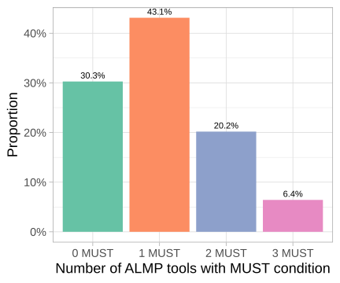
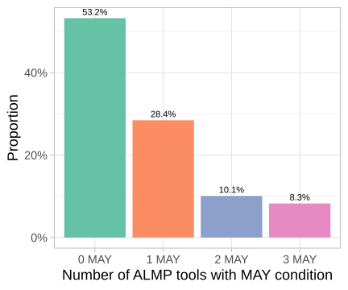
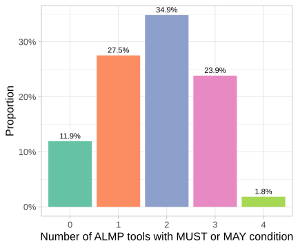

New evidence with deep learning
Barcelona Supercomputing Center
Barcelona Supercomputing Center
Barcelona Supercomputing Center
Barcelona Supercomputing Center
Barcelona Supercomputing Center
ICREA
ajunquera.github.io/jel
Three specific objectives:
Examples of design features:
| Tool | Design feature |
|---|---|
| Job search services | Boosting self-efficacy component |
| Adult training | Occupational specificity |
| Employment subsidy | Variable that determines the amount (in %) |
| Geographical mobility subsidy | Vehicle subsidised |
Beyond tools: prohibition of second participations
Descriptive and causal analyses of structured data
Presence of ALMP tool, column percentages of SOC policies with original regulatory bases document. Annotated with gpt-oss-120b (OpenAI et al., 2025).
| Condition | Job search services | Adult training | Employment subsidy | Geographical mobility subsidy |
|---|---|---|---|---|
| MUST | 30.28 | 41.28 | 27.52 | 3.67 |
| MAY | 11.93 | 27.52 | 22.94 | 11.01 |
| ABSENT | 57.80 | 31.19 | 49.54 | 85.32 |
Are combinations of tools frequent?


Most programs are, at least potentially, combinations of different ALMP tools.

There is variation in design features that we normally overlook in economics (Liu et al., 2014).
| Condition | Boosting self-efficacy | Enlisting social support |
|---|---|---|
| MUST | 6.52 | 10.87 |
| MAY | 8.70 | 0 |
| ABSENT | 84.78 | 89.13 |
Funded by the European Union – NextGenerationEU. Views and opinions expressed are however those of the author(s) only and do not necessarily reflect those of the European Union or European Commission. Neither the European Union nor the European Commission can be held responsible for them.